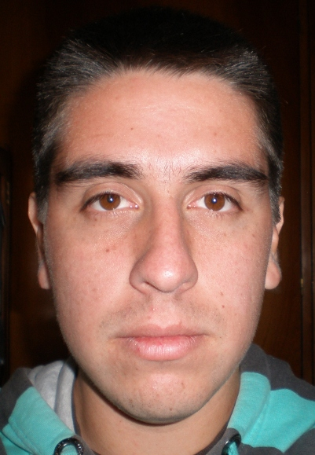

Curriculum Vitae

Conocimientos complementarios
- Buen manejo de pc (GNU/Linux, Windows).
- Buen manejo del Ingles(Lectura y escritura).
- Conocimiento avanzado de hardware.
- Dominio en herramientas de Animación y modelado 3D(Blender).
- Lenguaje de programación Python (medio).
- Lenguaje de programación Java (medio).
- Lenguaje de programación PHP (basico).
- RDBMS:
- MySQL (basico).
- SQLite (basico).
Experiencia laboral
- Tecnico reparador de PC
- Modalidad: Independiente
- Duración: 2 años (2009-2010)
- Desarrollo de sistema (Python)
- Modalidad: Independiente
- Duración: 10 días (2011)
Logros Personales
- Integrante de Salta Linux User's Group desde 2008.
- Colaborador 3ª Jornada de Software Libre – Salta 2008.
- Organizador 4ª Jornada de Software Libre – Salta 2009.
- Organizador 5ª Jornada de Software Libre – Salta 2010.
- Organizador FLISOL – Salta 2009.
- Organizador FLISOL – Salta 2010.
- Organizador FLISOL – Salta 2011.